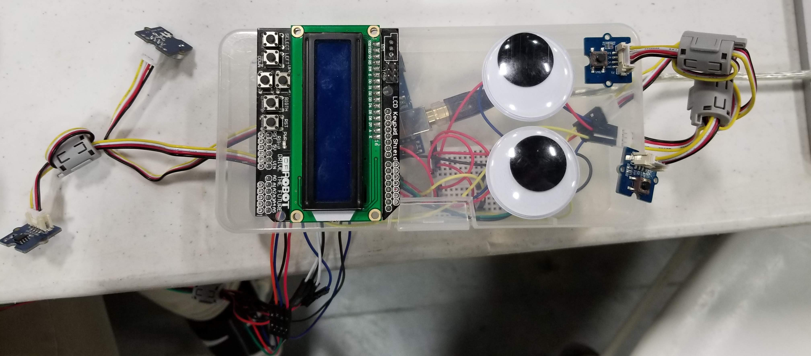

Journalists, rebels, and innocent civilians throughout the world live under the oppressive rule of dictators and
tyrants who desire to silence truth and punish those who refuse to conform. Our device, the SECRET, is a zero-knowledge
platform for hiding a single message across multiple flash drives in a manner that requires all devices to be brought back
together to reconstruct and decrypt the message. By combining stenography with encryption powered by our powerful,
non-deterministic random number generator, the message can be safely hidden in a manner that provides plausible deniability for the carriers of the drives.
There are 3 main components to our project:
1. Increasing the randomness of encryption by using situational data that is hard to replicate (sound and temperature)
2. Decreasing suspicion when physically transferring files by embedding encrypted files into images
3. Increasing the difficulty of opening files by physically separating key and files
Two flash drives are plugged into the SECRET, one of which is loaded with a secret message. The SECRET then uses a random number generator powered by atmospheric noise to generate a symmetric encryption key and initialization vector to encrypt the message. This ciphertext is then embedded into an innocent image using cutting-edge stenography technology, with the symmetric key required for decryption embedded in a separate image. One of these images overwrites the original secret message on the first flash drive, while the second image is written to the second. The drives can then be given to two separate couriers to carry through government checkpoints, secure in the knowledge that if the drives are checked nothing suspicious will be found. Once the couriers have separately made it to their destination, the drives can be plugged into another SECRET device, which will immediately extract the encrypted message and decryption key from the images, combining them to recreate the original secret message. No part of this process requires the presence of suspicious files on a device that may be checked or traffic across the internet that may cause authorities to become concerned.
